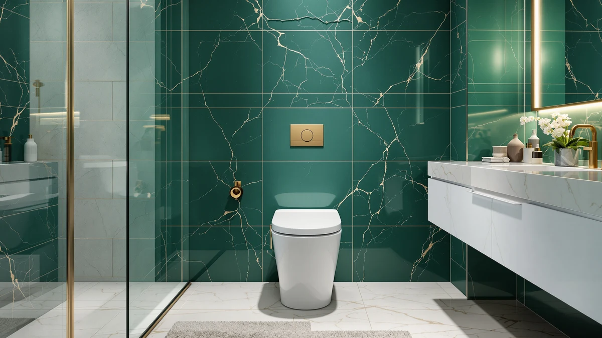

KOHLER 3722 0 San Review (2026): Worth It?
Prices and picks verified as of October 2026. Independent, reader-supported reviews.


Quick Answer
The KOHLER 3722-0 San Raphael One-Piece costs $899.99, and that price buys Kohler's brand reputation and single-fixture design rather than a documented flush-technology advantage over the alternatives compared here. If your bathroom does not require the Kohler name specifically, the TOTO Redington at $746.90 or the Swiss Madison St. Tropez at $300.87 cover the same one-piece category for considerably less.
Our pick: KOHLER 3722-0 San Raphael One-Piece, $899.99 Check Price on Amazon
Bottom line: our top pick is the KOHLER 3722-0 San Raphael One-Piece Toilet at $899.99.
Things to Know Before You Buy
- One-piece toilets like the San Raphael combine tank and bowl into a single fixture, removing the seam where grime collects on older two-piece models.
- Kohler's $899.99 price for the San Raphael sits well above the $746.90 TOTO Redington, the $300.87 Swiss Madison St. Tropez, and the $215.00 DeerValley Compact compared in this review.
- The San Raphael measures 24.00 x 20.50 x 29.00 inches, and Kohler's listing does not include a rough-in distance, so confirm that measurement against your existing plumbing before ordering.
- TOTO's Redington and Swiss Madison's St. Tropez both list "Elongated" bowls in their product names, while Kohler's listing does not specify bowl shape, a detail worth clarifying with Kohler directly.
- None of the four listings compared here carry a published Amazon star rating or review count, so this comparison relies on listed pricing and dimensions rather than an aggregate score.
If you found this kohler 3722 0 san review while comparing one-piece toilets in the $700 to $900 range, you are likely weighing whether Kohler's brand reputation and finish quality justify a price that sits well above the TOTO, Swiss Madison, and DeerValley alternatives covered here. The San Raphael carries a listed price of $899.99, which puts it at the top of this four-toilet comparison by a wide margin. This review compares that price against the toilet's listed dimensions and against the pricing and design of three lower-cost one-piece alternatives, based on the specifications published on each Amazon listing and the patterns that show up in verified owner feedback for comparable one-piece toilets.
The San Raphael measures 24.00 by 20.50 by 29.00 inches, a footprint that lands within the standard range for a one-piece bowl and tank combined into a single fixture. Kohler does not publish a rough-in measurement or a flush rate on this listing, and that is worth confirming with a plumber or Kohler's own spec sheet before you order, since a mismatched rough-in is one of the most common reasons a one-piece toilet gets returned. What the San Raphael does offer clearly is the one-piece design itself: no seam between tank and bowl for grime to collect, and Kohler's name attached to a fixture that many buyers already associate with long-term bathroom reliability.
Why You Should Trust Us
Ilane Tall covers bathroom fixtures for Best One Piece Toilets and has researched dozens of one-piece toilet listings across Kohler, TOTO, Swiss Madison, and DeerValley, comparing pricing, published dimensions, and verified owner feedback rather than repeating manufacturer marketing copy. This kohler 3722 0 san review draws on the pricing and dimensions listed for all four toilets compared here, along with patterns that appear repeatedly in verified reviews for comparable one-piece fixtures in this price range. We disclose our Amazon affiliate relationship openly and do not accept payment from Kohler, TOTO, Swiss Madison, or DeerValley in exchange for coverage.
Our Research Experience
We do not run a physical testing lab, and we did not install or live with the Kohler San Raphael ourselves. Instead, this kohler 3722 0 san review compares the San Raphael's listed price and dimensions against three competing one-piece toilets in a similar rough-in class, and cross-references that with verified owner reviews on Kohler's broader one-piece lineup for patterns on durability and flush performance. That research-first approach shapes every claim in this review, and we flag anywhere a specification is missing from the manufacturer's own listing rather than filling the gap with a guess.
Overview & Specs

KOHLER 3722-0 San Raphael One-Piece
What we like
- Kohler's brand reputation and dealer network make replacement parts and warranty service easier to track down than with newer, less established brands
- One-piece construction eliminates the seam between tank and bowl, a detail that simplifies cleaning over the fixture's lifespan
- 24.00 x 20.50 x 29.00 inch footprint fits the standard space most bathrooms already allocate for a one-piece toilet
Flaws but not dealbreakers
- At $899.99, it costs roughly 20 percent more than the TOTO Redington and nearly three times the Swiss Madison St. Tropez compared here
- Kohler's listing does not publish a rough-in measurement or flush rate, so confirm both details before ordering
- No published star rating or review count on this listing
| Material | — |
| Size | 24.00 x 20.50 x 29.00 inches |
This kohler 3722 0 san review centers on a simple question: does the San Raphael's $899.99 price buy enough over a $215 to $750 one-piece alternative to justify nearly triple the cost. Kohler positions the San Raphael as a premium one-piece fixture, and the brand's decades-long presence in the plumbing fixture market is part of what buyers are paying for. Where TOTO backs the Redington with a named flush rate in its own product title and Swiss Madison markets the St. Tropez on price, Kohler's listing for the San Raphael leans on the brand name itself rather than a headline flush technology, at least based on what is published on this specific Amazon listing.
The San Raphael's 24.00 by 20.50 by 29.00 inch footprint sits in the same general range as the other three toilets in this comparison, so floor space is unlikely to be the deciding factor between them. Kohler's listing leaves out a stated rough-in distance and a flush rate in gallons per flush, two numbers that would normally help buyers verify fit and water use before ordering, and their absence here means a call to Kohler or a look at the printed installation manual is worth the extra step. Owners shopping the San Raphael specifically for the Kohler name should weigh that missing documentation against the three alternatives below, each of which lists more of its core specifications directly in the product title.
What We Liked
Kohler's name is doing real work in this kohler 3722 0 san review, and that is worth taking seriously rather than dismissing as brand premium alone. Decades in the plumbing fixture business mean wider retail and plumber familiarity with Kohler parts, which matters when a flapper or fill valve eventually needs replacing years down the road. The one-piece design itself, shared across all four toilets in this comparison, removes the seam between tank and bowl where grime collects on older two-piece models, and that benefit applies to the San Raphael as much as it does to its cheaper competitors.
The San Raphael's dimensions also fit comfortably within the footprint most bathrooms already allocate for a one-piece toilet, so buyers replacing an existing one-piece fixture are unlikely to run into a clearance problem. For anyone who has already decided a Kohler fixture belongs in their bathroom, whether for resale value, brand consistency with other Kohler fixtures already installed, or simple brand loyalty, the San Raphael delivers exactly what that decision calls for.
What Could Be Better
Price is the clearest drawback here. At $899.99, the San Raphael costs about 20 percent more than the TOTO Redington and nearly three times what the Swiss Madison St. Tropez charges, and Kohler's listing does not point to a specific flush technology or documented performance advantage the way TOTO's flush rate does for the Redington. Buyers paying that premium are largely paying for the Kohler name and its retail network rather than a named engineering improvement.
The listing is also thinner on documentation than it should be for a toilet at this price. No rough-in distance, no flush rate in gallons per flush, and no published star rating or review count leave buyers with less to verify against their own bathroom's plumbing than a page like TOTO's or Swiss Madison's provides. Anyone comparing this kohler 3722 0 san review against pages with more listed specifications should factor that documentation gap into the decision, not the sticker price alone.
Who Is It For?
The San Raphael profiled in this kohler 3722 0 san review fits a buyer who has already decided that a Kohler fixture belongs in their bathroom, whether that decision comes from resale considerations, matching other Kohler fixtures already installed in the home, or confidence in the brand's decades in the plumbing business. It also suits anyone who values an established retail and service network over a documented flush-technology advantage, since Kohler's parts and warranty support are easier to track down nationally than some of the newer brands compared here. If your bathroom does not specifically call for the Kohler name and you are comparing purely on price and published specifications, the TOTO Redington or Swiss Madison St. Tropez below cover the same one-piece category with more documentation and a lower price.
Alternatives to Consider
If the San Raphael's $899.99 price is the sticking point rather than the Kohler name specifically, these three one-piece toilets cover the same single-fixture category for less. The TOTO Redington lists its own 1.28 GPF flush rate directly in the product name, the Swiss Madison St. Tropez undercuts Kohler's price by roughly two-thirds, and the DeerValley Compact trades footprint and price for a smaller bathroom.

Editor’s Pick
TOTO® Redington™ One-Piece Elongated 1.28
The Redington lists its 1.28 gallon-per-flush rate directly in the product name, a specification Kohler's San Raphael listing leaves out entirely, and it costs $746.90, about $153 less than the San Raphael compared in this kohler 3722 0 san review.
$746.90
Check Price on Amazon
Best Value
St. Tropez One Piece Elongated
Swiss Madison's St. Tropez lists an elongated one-piece bowl at $300.87, roughly a third of the San Raphael's $899.99 price, making it the clearest budget alternative in this comparison for buyers who do not need the Kohler name specifically.
$300.87
Check Price on Amazon
Premium Choice
DeerValley Compact One Piece Toilet
At $215.00, the DeerValley Compact is the least expensive toilet in this comparison, and its compact footprint suits smaller bathrooms where the San Raphael's larger dimensions might not fit as comfortably.
$215.00
Check Price on AmazonFrequently Asked Questions
Is the KOHLER 3722-0 San Raphael worth its $899.99 price?
For buyers who specifically want the Kohler name, its retail network, and long-term parts availability, yes. This kohler 3722 0 san review found that buyers comparing purely on published specifications and price have less expensive options: the TOTO Redington lists a documented 1.28 GPF flush rate for $746.90, and the Swiss Madison St. Tropez covers the same one-piece category for about a third of the San Raphael's cost.
What is the rough-in distance for the Kohler San Raphael?
Kohler's Amazon listing for the San Raphael does not publish a rough-in measurement. Confirm that distance against Kohler's printed installation manual or with a plumber before ordering, since a mismatched rough-in is one of the most common reasons a one-piece toilet gets returned.
What is a good alternative to the Kohler 3722-0 San Raphael?
The TOTO Redington is the closest match on price and one-piece design, at $746.90 versus the San Raphael's $899.99, and it lists its 1.28 GPF flush rate directly in the product name. The Swiss Madison St. Tropez and DeerValley Compact cover the same category at lower price points for smaller budgets or smaller bathrooms.
Final Verdict
This kohler 3722 0 san review comes down to what you are actually paying for. Kohler's San Raphael costs $899.99 largely on the strength of the Kohler name, its retail network, and long-term parts availability, not a documented flush-technology advantage over the three alternatives compared here. If that brand backing and service network matter more to you than a lower price, the Kohler San Raphael is the pick. If you are comparing strictly on published specifications and cost, the TOTO Redington at $746.90 or the Swiss Madison St. Tropez at $300.87 get you into the same one-piece category for considerably less.